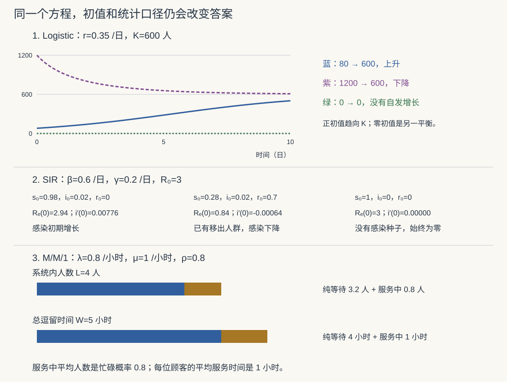

本页目录
建模 II · 增长、传染、捕食与排队
四种模型分别使用容量、流量、相互作用和随机到达。读每个公式时，都要问：状态是什么，参数有什么单位，哪个结论依赖哪个假设，以及图中显示的是有限时间数值还是长期定理。
学习层：曲线之前，先判断边界
1. 三个可以直接检查的问题
- Logistic 初值高于容量时，仍然向上长吗？初值恰为零时，会自行产生人口吗？
- SIR 的有效再生数大于 \(1\)，但没有任何初始感染时，确定性方程会产生疫情吗？
- M/M/1 的到达率等于服务率时，是否存在可归一化的平稳分布？“没有稳态”是否表示有限时刻的队列已经无限长？
先判断当前配置，再打开实验。参数改变后，图和账本按新配置更新；重新选择判断会隐藏结果。图和表保留原生宽度，手机可横向滚动，也可聚焦后按左右方向键。
2. 三种模型，三种检查
| 模型 | 状态与单位 | 首先检查 |
|---|---|---|
| Logistic | 人数 \(N\)；\(r\) 每日，\(K\) 人 | 初值、平衡与不变区间 |
| SIR | 比例 \(s,i,r\)；\(\beta,\gamma\) 每日 | 非负性、人口和、初始增长条件 |
| M/M/1 | 系统内顾客数；\(\lambda,\mu\) 每小时 | \(\lambda<\mu\)，以及是否包含服务中顾客 |
本页 SIR 的 \(r\) 是移出比例，不是 Logistic 的增长率；\(R_0\) 是基本再生数，\(r_0\) 则是初始移出比例。它们的符号接近，但含义不同。
JavaScript 失效时的读法： 默认 Logistic 为 \(r=.35/\text{日}\)、\(K=600\) 人、\(N_0=80\) 人，\(N(10)\approx501.55\) 人，长期趋于 \(600\)。默认 SIR 为 \(\beta=.6/\text{日},\gamma=.2/\text{日},i_0=.02,r_0=0\)，所以 \(R_e(0)=2.94\)，全时段解析感染峰高约 \(.307197\)；最终 \(s_\infty\approx.058078\)。默认队列为 \(\lambda=.8/\text{小时},\mu=1/\text{小时}\)：系统人数 \(L=4\)，纯排队人数 \(L_q=3.2\)，总逗留 \(W=5\) 小时，纯等待 \(W_q=4\) 小时。数值单位必须随参数口径一起读。
3. 数值一致性不是现实验证
SIR 实验采用 RK4，并比较步长上限 \(.01\) 日与 \(.005\) 日的结果。它还检查输出点的人口和与第一积分漂移；没有把负值裁成零或把比例重新归一化。这些是实现诊断，步长减半差不是自动成立的严格误差界，更不能验证现实人群满足充分混合假设。
队列图只在 \(\rho<1\) 区域画稳态人数函数。临界或超载时，红标记表示实际负荷，稳态量显示为未定义。
1. Logistic：有界不等于所有曲线都呈 S 形
从增长率正比于人数出发， \(N'=rN\) 给 \(N=N_0e^{rt}\)。它假定人均净增长率固定；是否适合某段真实数据需要检验，不能先宣布所有短期增长都指数化。
在 \(r>0,K>0\) 下，若人均净增长随拥挤线性降低，就得到
1.1 先读相线，再解方程
平衡点为 \(0,K\)。当 \(0<N<K\) 时导数为正，当 \(N>K\) 时导数为负。右端局部 Lipschitz，解的唯一性保证轨迹不能穿过平衡解；所以正初值的解始终留在初值与 \(K\) 之间。
对 \(N_0>0\)，分离变量或令 \(u=1/N\) 可得
分母在这个时间域内为正。由公式或单调有界性：
- \(0<N_0<K\)：单调上升，趋于 \(K\)；
- \(N_0>K\)：单调下降，趋于 \(K\)；
- \(N_0=K\)：始终为 \(K\)；
- \(N_0=0\)：始终为零，不能直接在含 \(1/N_0\) 的公式中代入；
- 若另取 \(r=0\)：所有初值都是常数解。
再求导得到
只有从 \(0<N_0<K/2\) 出发的增长轨迹会在未来经过拐点，时间为 \(t_*=\log(K/N_0-1)/r\)。从 \(K/2<N_0<K\) 出发，增长从一开始就向下凹；高于容量的轨迹则下降。资源限制并不强迫每条现实曲线遵循这个特定的二次方程。
1.2 容量是否可估计是另一个问题
当 \(N/K\) 很小时，\(N'\approx rN\)，容量对早期轨迹的影响较弱。有限噪声数据可能难以区分不同 \(K\)，但这不是“拐点之前绝对不可识别”的定理。需要同时说明观测窗口、精度、初值和误差模型，参见建模方法论。
2. SIR：比例、阈值与全程约束
在封闭、充分混合、参数固定、移出后不再感染的模型中，令 \(s,i,r\) 分别表示易感、感染和移出比例，初值非负且和为 \(1\)。模型为
这里 \(\beta si\) 是每单位时间的人口比例通量。若改用人数 \(S,I,R\) 和固定总人数 \(N\)，感染项应写成 \(\beta SI/N\)，不能把比例方程原样代入人数。MIT：SIR 与充分混合模型
2.1 非负性与守恒
三式相加给 \((s+i+r)'=0\)。在边界 \(s=0\) 或 \(i=0\)，相应变量的导数为零；在 \(r=0\)，导数非负。也可直接写
因此非负单纯形保持不变，解不会因为真实方程而产生负比例。数值程序若越界，不能简单裁剪后再宣称方程守恒。
2.2 再生数与感染种子
基本再生数和当前有效再生数为
在模型假设下，全易感基准中平均感染持续时间为 \(1/\gamma\)，有效接触率为 \(\beta\)，乘积解释 \(R_0\)。对于 \(i>0\)， \(i'>0\iff\beta s>\gamma\)。如果 \(i_0=0\)，则 \(i(t)=0\)，即使 \(R_e(0)>1\) 也不会无中生有地出现感染。
若 \(i_0>0\) 且 \(R_e(0)=1\)，初始一阶导数为零，但 \(i''(0)=\beta s'(0)i_0<0\)（此时 \(s_0>0\)）。所以之后开始下降；阈值等号不意味着长期保持平台。若初始 \(R_e(0)<1\)，由于 \(s\) 不增，也不会稍后自己进入增长阶段。
2.3 全时段峰高不等于网格最大值
在 \(s>0,i>0\) 的区间消去时间：
积分得到第一积分
若 \(i_0>0\) 且 \(s_0>\gamma/\beta\)，峰值出现在 \(s_*=\gamma/\beta\)，因此
若一开始就在阈值以下或等号处，最大值是初值 \(i_0\)。若没有感染种子，最大值是零。解析式给峰高，没有直接给峰时；短观察窗可能还没包含峰，离散网格也可能错过精确峰时。
2.4 最终规模的物理解
因为 \(r\) 单调且不超过 \(1\)， \(\int_0^\infty i(t)\,dt\le1/\gamma\)。在单纯形上导数有界，因此非负的 \(i\) 一致连续；若它不趋零，就会反复产生宽度和面积有正下界的脉冲，与可积性矛盾。故 \(i_\infty=0\)。
当 \(s_0>0\) 时，由 \(s'/s=-(\beta/\gamma)r'\) 得到
这同时说明 \(s_\infty>0\)。感染消退不要求所有易感者都感染过。方程可能有需区分的代数根，必须选择由初值轨迹达到的物理解：若 \(i_0=0\)，保持 \(s_\infty=s_0\)，不能选择另一个“疫情发生后”的根。
对于 \(i_0>0,s_0>0\)，实验令 \(w=\log(s_\infty/s_0)\)，解
左端严格凹，左端点取负值而 \(w=0\) 取正值，区间内有唯一的物理解，可作二分。\(s_0=0\) 时直接有 \(s_\infty=0\)，不使用对数关系。
2.5 参数识别与干预的边界
若能精确连续观测 \(s,i,r\) 且 \(s,i>0\)，则 \(\gamma=r'/i\)、\(\beta=-s'/(si)\)，并不需要干预数据才可能分开参数。实际只有噪声病例数、未知漏报和缺少仓室观测时，求导不稳定、参数混淆或延迟才会成为问题。应说明观测了什么，而不是无条件说参数不可识别。
在均匀随机免疫、完全保护或明确的易感性折扣等理想机制下，阈值可以转换成对易感比例的限制。但“疫苗有效率”可能指阻断感染、减轻症状或防重症，不能不加定义就代入同一个比例公式。本页的练习是模型算术，不从简单仓室方程推出实际公共卫生决策。
3. Lotka–Volterra：闭轨道需要哪些条件？
对猎物 \(x\) 与捕食者 \(y\)，设
从严格正初值出发保持正性，正平衡为 \((x_*,y_*)=(c/d,a/b)\)。函数
沿轨迹的导数为 \((d-c/x)x'+(b-a/y)y'=0\)。它在正象限严格凸、仅在平衡点取最小值，靠近坐标轴或无穷远时趋于无穷。因此非平衡正初值所在的等值曲线是围住平衡点的紧闭曲线；向量场在其上不为零，轨迹周期运行。
这不是说任意初值都有闭轨道：平衡初值静止，坐标轴上的解也不同。加入猎物承载量、季节项或其他物种后，第一积分通常不再守恒，不能继续沿用永恒闭轨道结论。进一步的相平面分析见ODE 系统与稳定性。
3.1 时间平均与共同捕捞率
设周期为 \(P\)，对 \(\frac{d}{dt}\log x=a-by\) 在一周期积分，左侧为零，得 \(\bar y=a/b\)；同理 \(\bar x=c/d\)。这是沿周期轨道的时间平均，不是每个时刻都在平衡点。
若两种群都承受相同的按比例捕捞率 \(h\)，模型变为
在 \(0<h<a\) 且正初值的条件下， \(\bar x_h=(c+h)/d\)、\(\bar y_h=(a-h)/b\)。猎物时间平均增加，捕食者时间平均减少；这是该特定模型的 Volterra 效应。不能把“平均数之比”自动等同于“瞬时比例的时间平均”，也不能忽略捕捞机制或生态条件。
4. M/M/1：先分清“系统”和“等待区”
假设顾客按率 \(\lambda\) 的 Poisson 过程到达，服务时间独立同分布为率 \(\mu>0\) 的指数分布，且与到达过程独立。系统只有一个服务台，先来先服务，等待空间无限，无拒绝和放弃。
令 \(X_t\) 为系统内总人数，包括正在服务的至多一人。它是连续时间生灭链：\(n\to n+1\) 的率为 \(\lambda\)，\(n\to n-1\)（\(n>0\)）的率为 \(\mu\)。这是转移率，不是离散时间每步转移概率。
4.1 平稳分布从哪里来？
局部平衡给 \(\pi_n\lambda=\pi_{n+1}\mu\)，故 \(\pi_n=\pi_0\rho^n\)，其中 \(\rho=\lambda/\mu\)。要使总概率为 \(1\)，需
当 \(\lambda>0,\lambda\ge\mu\)，这个级数无法归一化，不存在平稳概率分布；不是把原式继续算成负数或负等待。有限初始人数下，任意有限时间的到达数几乎必然有限，因此“无稳态”也不等于“已经有无限多人”。
若 \(\lambda=0\)，空系统为吸收态，唯一平稳分布集中在 \(0\)。此时没有真实到达者的等待样本；下文 \(W=1/\mu\) 应理解为往空稳态系统放入一个假想顾客的逗留时间均值。
4.2 四个平均量必须分别命名
几何级数求导给 \(L=\sum n(1-\rho)\rho^n=\rho/(1-\rho)\)。平稳时服务台忙碌概率为 \(\rho\)，于是
对 \(\lambda>0\)，Little 公式分别给 \(L=\lambda W\)、\(L_q=\lambda W_q\)。它的适用范围比 M/M/1 更广，但必须保持人数、时间、有效进入流量的统计口径一致，并满足相应稳定与平均量存在的条件。MIT：M/M/1 中系统与等待区的区别
例如 \(\lambda=8/\text{小时},\mu=10/\text{小时}\)，有 \(L=4\)、\(L_q=3.2\)、\(W=.5\) 小时、\(W_q=.4\) 小时。30 分钟是总逗留，24 分钟才是纯等待；服务均值为 6 分钟。
4.3 接近临界负荷时
固定服务率而令 \(\lambda\uparrow\mu\)，系统平均人数和时间发散。这是一族稳定模型趋向临界的极限，不是在超载配置下仍存在一个均值为无穷的平稳分布。超载时 \(\rho\) 仍可作为负荷比，但不能把大于 \(1\) 的值称为忙碌概率。
有限容量、顾客放弃、多个服务台、优先级或非指数服务，都需要改写模型。尤其有丢失时，Little 公式中的流量通常需要使用实际接纳流量，不能不加区分地用外部到达率。
5. 一张条件对照图

6. 练习与推导
练习 1：相同容量，为什么有一条曲线向下？
取 \(K=600,r=.35/\text{日}\)，分别从 \(N_0=80,1200,0\) 出发。比较初始方向与长期极限。
展开推导
对 \(80\)，\(N'(0)=.35\times80(1-80/600)>0\)，上升趋于 \(600\)；对 \(1200\)，\(N'(0)=-420\) 人/日，下降趋于 \(600\)；对 \(0\)，解始终为零。正平衡吸引正初值，并不意味着零初值也会离开零。三种轨迹都保持非负，但形状不同。
练习 2：初始导数为零，是平台还是峰顶？
SIR 取 \(\beta=1,\gamma=.5,s_0=.5,i_0=.2,r_0=.3\)。计算 \(i'(0)\)、\(i''(0)\)，并与 \(i_0=0,s_0=1\) 比较。
展开推导
第一组有 \(\beta s_0=\gamma\)，所以 \(i'(0)=0\)； \(s'(0)=-1\times.5\times.2=-.1\)， \(i''(0)=\beta s'(0)i_0=-.02/\text{日}^2<0\)，随后下降，最大感染比例就是 \(.2\)。 第二组即使 \(R_0=2>1\)，因为没有感染种子，\(i(t)\) 始终为零；阈值判断必须与初值一起使用。实验使用未显示舍入前的参数比较；不能因为屏幕把某个接近阈值的数显示成 \(1\)，就断言数学上恰好相等。
练习 3：十分钟目标，是总逗留还是纯等待？
队列到达率为 \(8/\text{小时}\)，服务率可调整。分别求 \(W\le10\) 分钟与 \(W_q\le10\) 分钟所需的服务率。
展开推导
10 分钟是 \(1/6\) 小时。总逗留目标要求 \(1/(\mu-8)\le1/6\)，故 \(\mu\ge14/\text{小时}\)。 纯等待目标要求 \(8/[\mu(\mu-8)]\le1/6\)，在稳定条件 \(\mu>8\) 下等价于 \(\mu^2-8\mu-48\ge0\)，故 \(\mu\ge12/\text{小时}\)。 两个答案不同，原因是总逗留包含服务时间。这个反解只针对已声明的 M/M/1 假设。
四个模型是学习建模条件的起点。转向随机感染、网络扩散或更一般队列时，要重新说明状态、可观测量、转移规则、近似误差和验证数据；模型名称相似，不代表结论可以直接搬用。